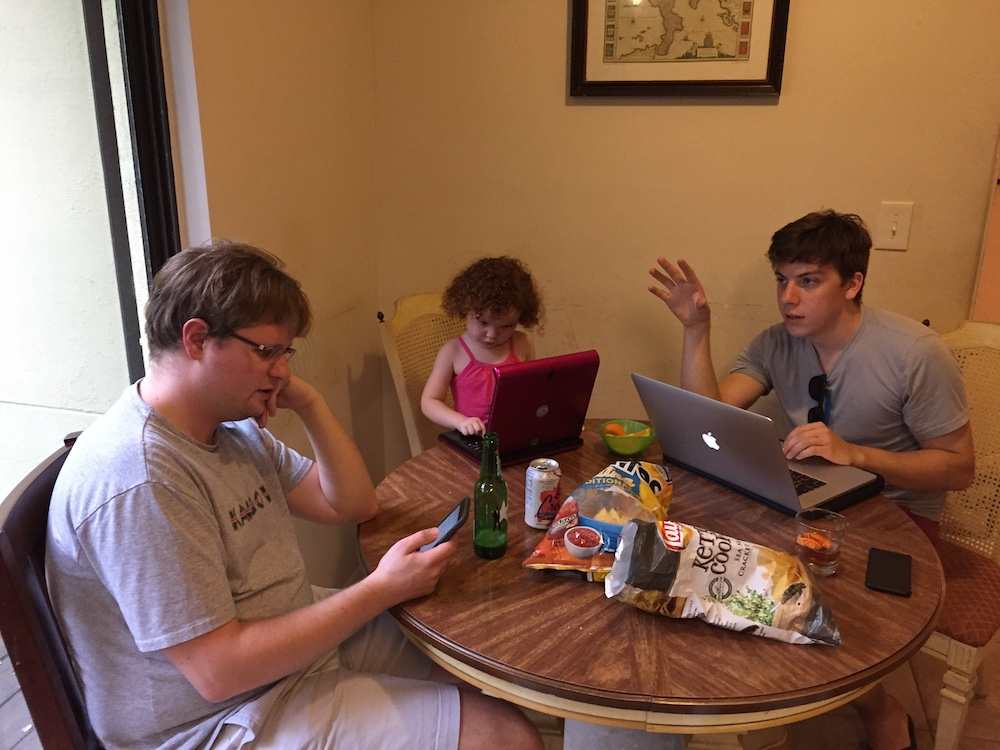
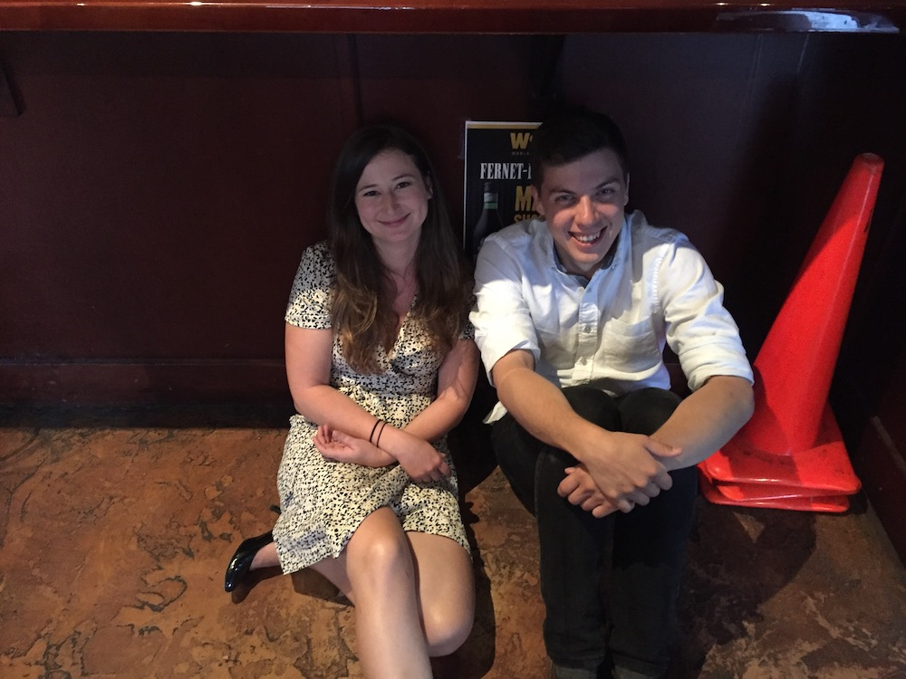

Jan 15, 2018
A BAR Chart of My Favorite St. Pete Bars
BOOPITY BAR BAR BAR CHART TKTKT
Get it? Did you get the pun?
BOOPITY BAR BAR BAR CHART TKTKT
Get it? Did you get the pun?
Last week my friends wrote down all the things I said the most:
Liv gave me free lessons.
Liv used her school books to teach me how to tally up everything I consumed in a week. Here's what I found!
HERE’S WHAT I’M MADE OF ...
• 12 percent angst
• 18 percent scotch
• 21 percent coffee
• 30 percent Red Mesa Mercado
• 4 percent 3 a.m. jam sessions
• 1 percent bylines
• 14 percent fear of dying by allergy
WILL INSERT GREAT 99% LANDON PIE CHart here before next draft
Lisa still spent more time with Landon today.
Landon also says we're going to Philly.
Gonna start a pros cons list.
Rushing to get my third story done for the Tampa Bay Times before I leave and I am ~~~STRESSED~~~.

Look at us way back when.
Lisa still spent more time with Landon today.
LOL, if I wait long enough maybe someone else will do it.

fuckityfuck.xlsx